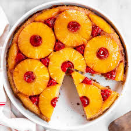

Pineapple Upside Down Cake

Description
Pineapple upside-down cake is a classic dessert featuring a caramelized topping of pineapple rings and cherries. The cake is baked with a buttery, sweet layer of brown sugar and pineapple on the bottom, then flipped over to reveal a beautiful, fruity topping. The result is a moist and flavorful cake with a rich, caramelized pineapple flavor, perfect for a delightful treat.
Ingredients
- 1/2 cup unsalted butter
- 1 cup brown sugar
- 1 can (20 oz) pineapple slices
- 1 1/2 cups all-purpose flour
- 1 cup granulated sugar
- 1/2 cup unsalted butter
- 2 large eggs
- 1/2 cup milk
- 2 teaspoons baking powder
- 1/2 teaspoon vanilla extract
Steps
- Preheat Oven: Heat to 350°F
- Prepare Topping: Melt 1/2 cup butter in a pan, sprinkle with brown sugar, and arrange pineapple slices.
- Mix Batter: Cream 1/2 cup butter with granulated sugar. Add eggs and vanilla, then mix in flour and baking powder alternately with milk.
- Assemble and Bake: Pour batter over pineapple. Bake for 35-40 minutes until a toothpick comes out clean.
- Cool and Invert: Cool for 10 minutes, then invert onto a plate.
Enjoy your pineapple upside-down cake!